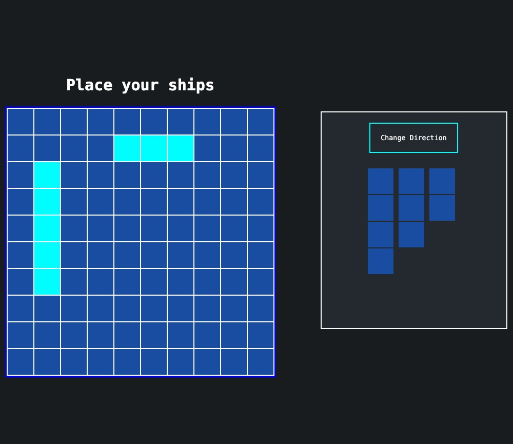

Previous Odin Projects*
*these are the ones with nice UI's - the rest are on GitHub


An interactive Battleships game built with vanilla javascript, html and css. Finally got my head around classes on this one.
This one's a pretty simple Todo list web app. I based the layout off trello (columns for each project). This one was to learn about factory functions.